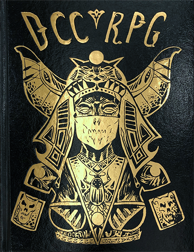
Dungeon Crawl Classics
What's different:
No skills, just roll a d20+ stat for a check anyone could do. For the rest, if a check is related to your background or you're experienced in it through play you'll roll a d20 otherwise a d10.
No Feats, few abilities, don't need cooking feat to cook, don't have 10 000 modifiers in combat.
Spellcasting, spells that can go very wrong or very right.
Race as Class, might open this up later but for now it'll make races very different.
Stats, STR, DEX and INT as expected. STAmina is basically constitution. PER is a combination of charisma and wisdom.
LUCK is a new stat, you can add +1 to any roll by expending a point of luck. You can't regain luck normally (except thieves and monkeys).
I'll also use a few homebrew rules but not too much:
Homebrew
Below are some summaries of the classes most important attributes.
Warrior
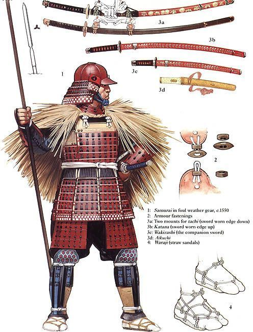
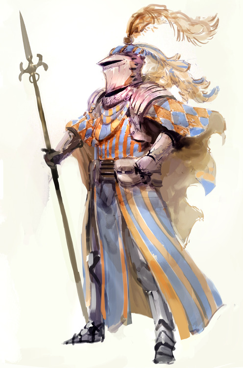
Mighty Deeds: This feature basically stands in for any warrior ability you can think of. Every time the warrior attacks he also rolls an extra deed die (a d3 to start with) and adds the result to hit and dmg.
Whenever you attack you can also declare an extra action like a sweep or a push. If the deed die is 3 or higher it will always succeed in some way.
Of course if you roll a 3 to blind vs a powerful enemy they're not immediately blinded but they might have blood in their eye for a smaller effect (or get a save).
some basic uses:
Blind
Rend armor
Grapple
Push
Trip
Disarm
etc etc
Deeds can also set up other deeds, say if you grapple someone, the next turn you could pin them down or coup de grace the target (if he's not too much bigger than you).
Some weapons may also be better at some deeds, like an axe at splitting shields or a hooked pole at tripping(at dms discretion, maybe +1 to die or harder save for target).
Critical hits: As they gain levels warriors have access to the best crit tables and increase their crit range.
Dwarf
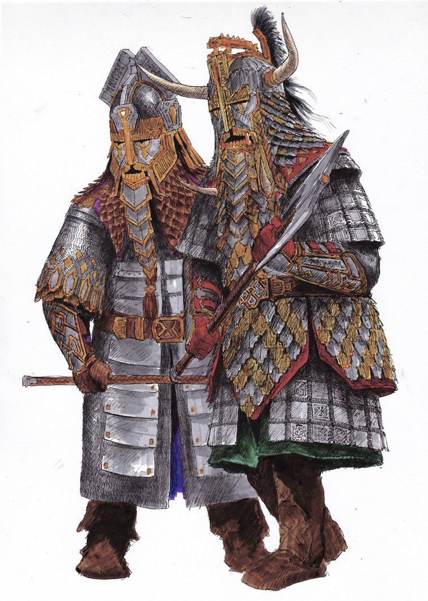
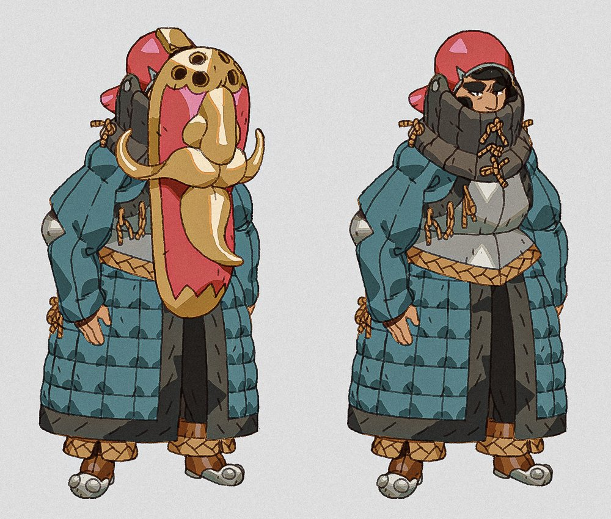
The Dwarf is a lot like the warrior, it has the same
Mighty Deeds and only slightly worse
Critical Hits.
In addition to this the Dwarf can smell gold plus:
Shield Bash: Dwarves start with an extra attack that uses a d14 to hit.
No Darkvision/ Infravision
Wizard
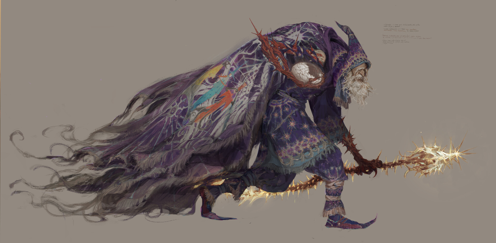
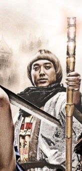
They cast spells! most of the interesting stuff is in the spells themselves.
Spellcasting, you roll a d20+int+lvl and see the spell for your result (In the event of a saving throw this number is also the target), if you roll a 20 you add your lvl once more to the result.
If you roll very low you may get a misfire and/or corruption as described by the spell.
There are
no spell slots, you can cast them until you fail, when you fail a spell you can cast it again the next day.
Spellburn, before casting a spell the spellcaster can decide to use his own lifeforce to empower a spell.
You can burn any amount of points of STR DEX and STA to add them to your spell roll. These will regenerate at 1 point per day.
Spellbook, at lvl1 Wizards start with 4 random lvl1 spells. They learn an additional random spell when they level up or they can choose to learn one from a scroll/ teacher.
Elf
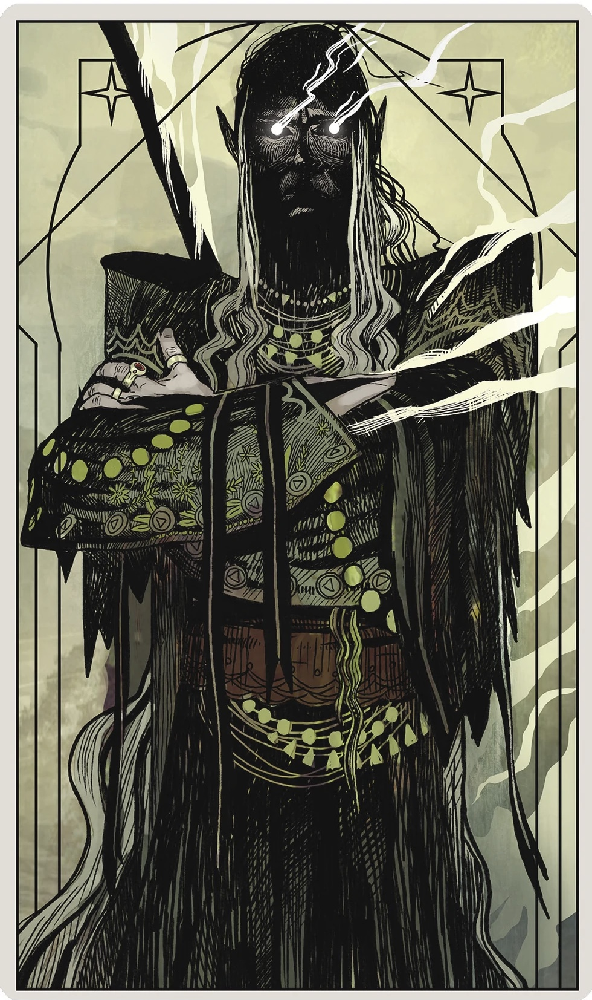
Elves are basically spellswords. They cast spells like a wizard but are also decent at fighting and are good at finding hidden doors.
They start with 4 random lvl1 spells but also get the patron spells(patron bond, invoke patron) right away.
No Darkvision/ Infravision
Cleric
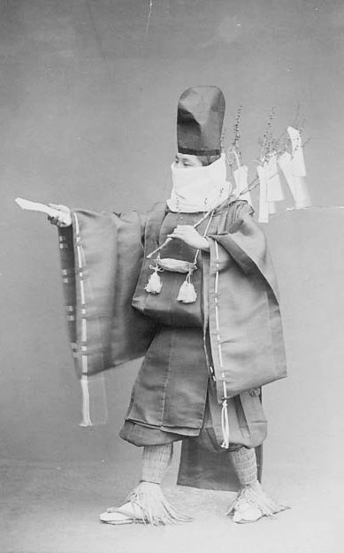
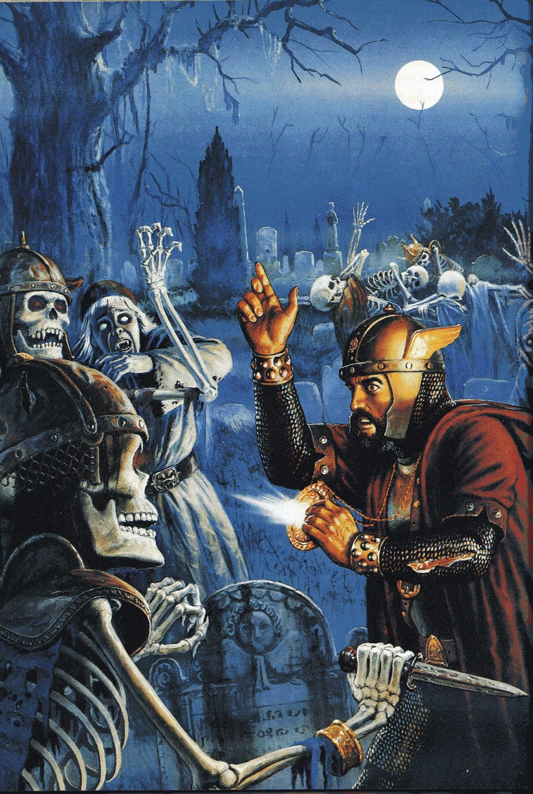
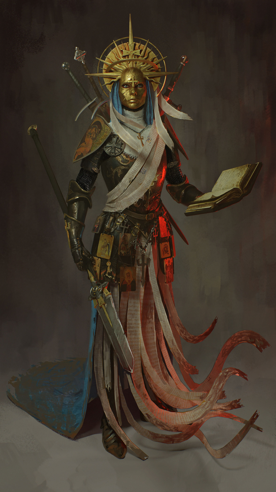
Clerics cast spells in a similar way to wizards, rolling a d20+
PER+lvl. They start with 4 random Cleric spells and gain 1 per level.
Disapproval, when clerics fail to cast a spell they don't lose it for the day, nor do they misfire/ get corruption. Instead their disapproval range increases.
The dissaproval range starts at 1 and goes up with every failure. If on a spell roll you roll(natural, no mods) in the disapproval range your god will give you a limitation/ task which can be quite trying.
Turn Unholy, as expected. Alignment/ god can allow you to turn different things(such as paladins haha).
Lay on Hands, a basic healing spell available by default. Effectiveness depends slightly on alignment of target.
SOME BALANCE CHANGES:
Healing, Lay on Hands just enhances natural healing,
if you heal someone twice within an hour they gain 1 exhaustion (2 encumbrance).(alternate rule 2 dissaproval for healing twice in 10 minutes?)
Dissaproval halves on rest, rounds up (instead of just reseting to 1).
Thief
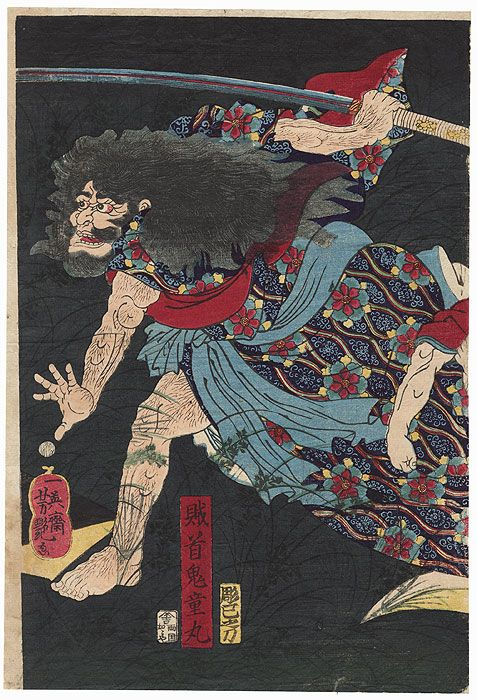
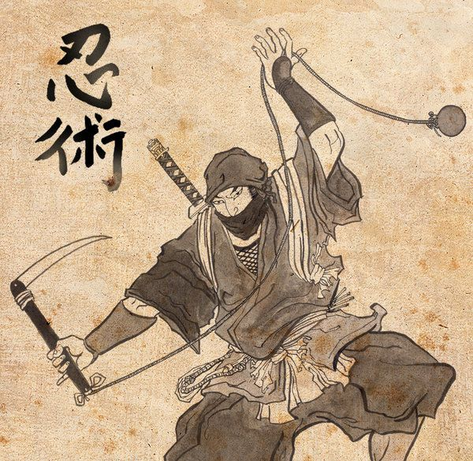
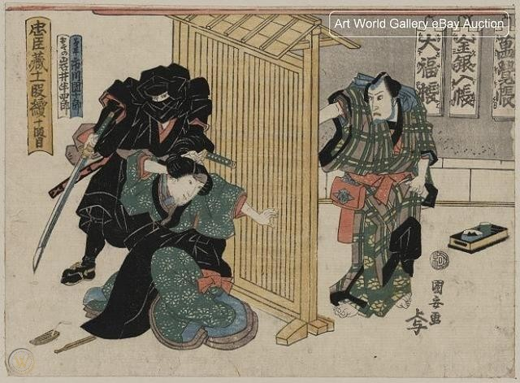
Thieves have a few skills that work differently. For example
move silently isn't contested by an enemy but depends on the surface.
So moving silently on carpet just requires you to roll higher than a 5 while crunchy leaves may be a 15. Your bonusses to these skills depend a bit on your alignment.
Backstab, when hidden from the target thieves get a bonus to hit and automatically crit.
Luck Die, instead of getting +1 to a roll for expending luck thieves roll a die, thieves also regain luck overnight.
Monkey (Halfling)
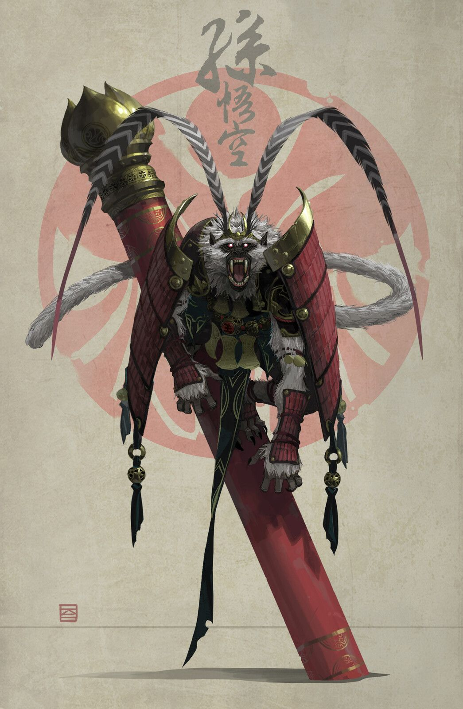
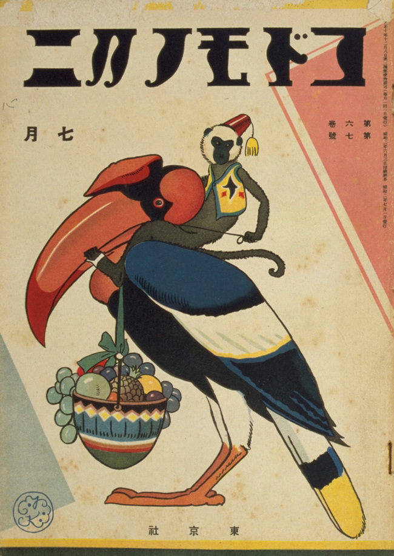
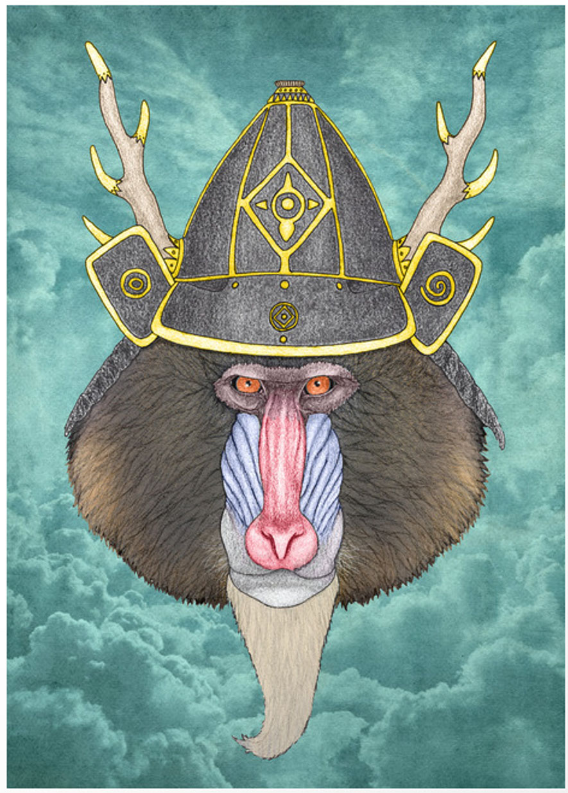
Monkeys (Halflings in the book), are a sort of Thief/Fighter. They have a few of the thiefs skills (+climb because they're monkeys now) and are skilled at two weapon fighting.
Good Luck Charm, Monkeys gain more luck when they expend it and they can give their luck to an ally even outside of their turn. They regain luck overnight like a thief.
Monkeys are also good at befriending other animals.